CS184/284A Spring 2025 Homework 3 Write-Up
Link to webpage: cal-cs184-student.github.io/hw-webpages-Mohammed-A-Amin/hw3/index.html Link to GitHub repository: https://github.com/cal-cs184-student/hw3-pathtracer-seanmoo

Overview
In this homework, we built a path tracer step by step and saw how each component fits into a full rendering pipeline. We started by generating camera rays and intersecting them with scene geometry, then added BVH acceleration so the renderer could handle more complex scenes efficiently. From there, we implemented direct lighting with both hemisphere sampling and importance sampling, extended the renderer to support indirect lighting through recursive global illumination, and then improved that estimator with Russian roulette and adaptive sampling. By the end, we had a renderer capable of producing soft shadows, indirect bounce lighting, color bleeding, and sampling-rate visualizations that show where the computation is actually being spent.
What stood out most to us while working through the assignment was how much both efficiency and sampling strategy matter in practice. We could see very clearly that even a correct rendering equation estimator is not very useful if the underlying intersection pipeline is too slow, and likewise that a fast renderer still produces poor results if the sampling strategy has high variance. Implementing BVH made complex scenes practical, while importance sampling, recursive bounces, and Russian roulette made the Monte Carlo estimator much more effective. Adaptive sampling tied everything together by showing us that not all pixels need the same amount of work, and that convergence can vary a lot depending on geometry, visibility, and indirect illumination. Overall, this homework made the rendering process feel much more concrete for us, because we were not just applying formulas from lecture but actually seeing how those ideas affect image quality, noise, and runtime.
Part 1: Ray Generation and Scene Intersection
Ray Generation
We generate camera rays by mapping normalized image coordinates \((x, y)\) from \([0,1] \times [0,1]\) to the camera sensor plane at \(z = -1\),
interpolating (via lerp) between the bottom-left corner \((-\tan(\text{hFov}/2),\; -\tan(\text{vFov}/2),\; -1)\) and top-right corner
\((\tan(\text{hFov}/2),\; \tan(\text{vFov}/2),\; -1)\). The ray direction in camera space is then transformed to world space
using the camera-to-world rotation matrix c2w.
Triangle Intersection
Following the Möller-Trumbore algorithm from lecture and Discussion 7, we solve for both the ray parameter \(t\) and barycentric coordinates \((b_1, b_2)\) simultaneously. We compute edge vectors \(\mathbf{E_1} = \mathbf{p_2} - \mathbf{p_1}\), \(\mathbf{E_2} = \mathbf{p_3} - \mathbf{p_1}\), and \(\mathbf{S} = \mathbf{o} - \mathbf{p_1}\), then use cross products \(\mathbf{S_1} = \text{cross}(\mathbf{d}, \mathbf{E_2})\) and \(\mathbf{S_2} = \text{cross}(\mathbf{S}, \mathbf{E_1})\) to get:
\[ \begin{bmatrix} t \\ b_1 \\ b_2 \end{bmatrix} = \frac{1}{\mathbf{S_1} \cdot \mathbf{E_1}} \begin{bmatrix} \mathbf{S_2} \cdot \mathbf{E_2} \\ \mathbf{S_1} \cdot \mathbf{S} \\ \mathbf{S_2} \cdot \mathbf{d} \end{bmatrix} \]We check that \(t\) is within \([\text{min\_t},\; \text{max\_t}]\) and that the barycentric coordinates satisfy \(b_1 \geq 0\), \(b_2 \geq 0\), \(b_1 + b_2 \leq 1\). If valid, we interpolate the vertex normals using \(b_0 = 1 - b_1 - b_2\) to get the surface normal at the hit point.

|

|

|
|
Part 2: Bounding Volume Hierarchy
BVH Construction
We build the BVH recursively. For each node, we compute the bounding box of all primitives.
If count >= max_leaf_size, we create a leaf.
Otherwise, we pick the axis with the largest extent (the dim of widest side of bbox)
and compute the average centroid of all primitives along that axis as the split point.
Addressing the heuristic for splits, we simply did it based off whether their centroid falls below or above
this average, which intuitively makes the most sense. We account for an edge case: if all primitives land
on a single side we just split the list in half instead — otherwise we'd have infinite recursion.
BVH Performance
As noted in the spec, even a simple heuristic reduces ray intersection complexity from \(O(n)\) to \(O(\log n)\).
For peter.dae, rendering without BVH took 274.93s with an average of
40,018 intersection tests per ray. With BVH, the same render completed in 0.13s
with only 2.53 intersection tests per ray — about a ~2000x speedup.
This demonstrates how the BVH allows the traversal to skip entire subtrees of primitives whose bounding boxes
the ray misses, dramatically reducing the number of intersection tests needed.
|
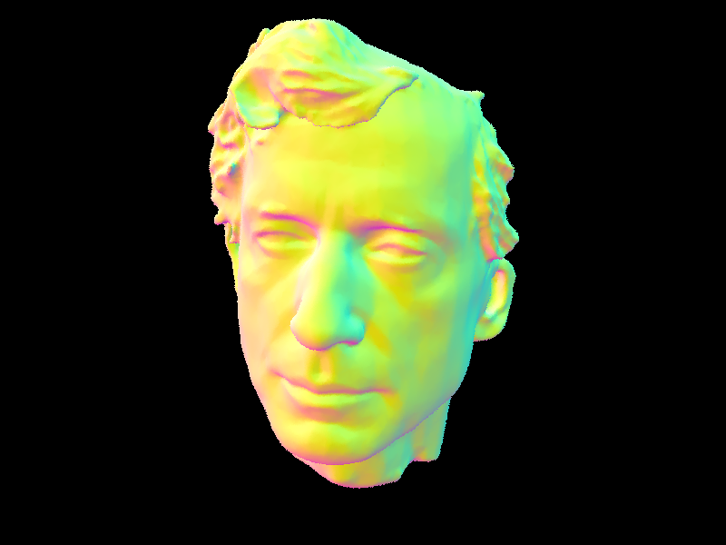 |
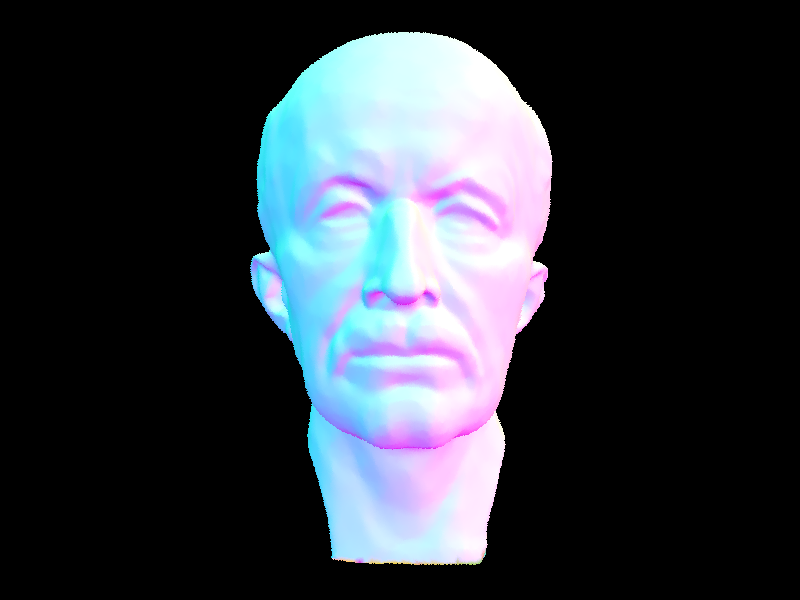 |
|
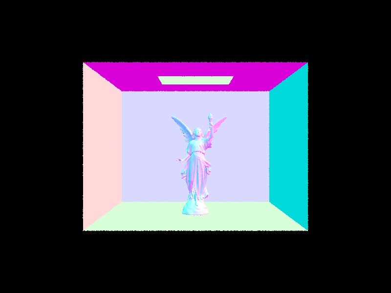 |
|
Part 3: Direct Illumination
Uniform Hemisphere Sampling
We estimate direct lighting by shooting num_samples random rays uniformly across the hemisphere above the hit point.
For each ray that hits a light source, we accumulate its contribution using the Monte Carlo estimator provided:
\( f(\omega_i \to \omega_o) \cdot L_i \cdot \cos(\theta) \;/\; p(\omega) \), where \( p(\omega) = 1/(2\pi) \) for uniform hemisphere sampling.
Importance Sampling Lights
Instead of random hemisphere directions, we loop over each light in the scene and sample directions toward the light
using sample_L. We then cast a shadow ray to check if anything blocks the path to the light. If unblocked,
we accumulate using the same reflection equation but with the pdf provided by sample_L. Point lights only
need one sample since all samples would be identical.
|
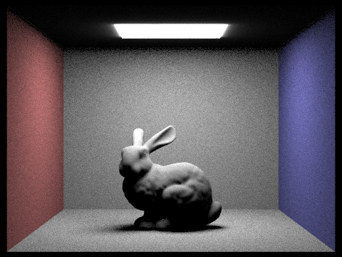 |
|
|
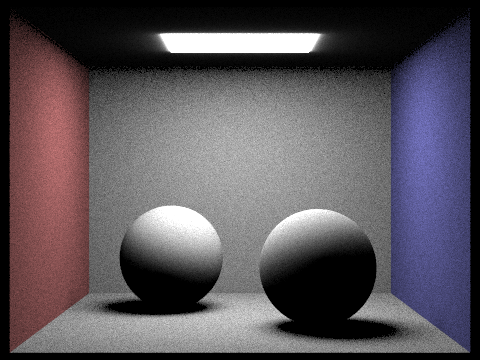 |
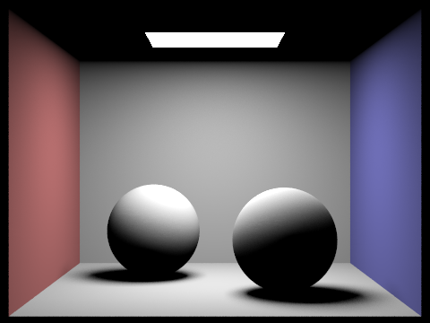 |
Below we compare noise levels in soft shadows when rendering CBbunny.dae with 1 sample per pixel (-s 1) and varying light rays (-l) using light sampling:
|
|
|
|
|
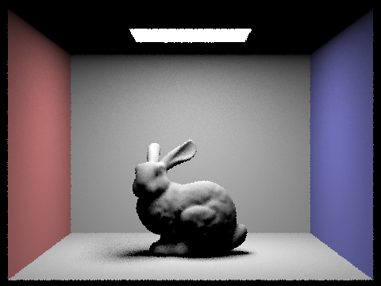 |
Comparison between lighting sampling and uniform hemisphere sampling: Importance sampling produces much cleaner results than hemisphere sampling at the same sample count and all other settings held constant. With hemisphere sampling, the whole image (and mainly softer shadows) appear very grainy, and this is because most sampled directions don't hit the light, so only a small fraction of samples contribute to the estimate. Importance sampling looks much less grainy and directs every sample toward a light source, so each sample has the potential to contribute, resulting in less variance. This difference is very visible in lighter regions, where hemisphere sampling is grainy while importance sampling renders smoothly. Additionally, importance sampling can handle point light sources, which hemisphere sampling cannot render at all since the probability of a random ray hitting a single point is zero.
Part 4: Global Illumination
Walk Through of Indirect Lighting Implementation
For diffuse materials, we implemented DiffuseBSDF::sample_f by sampling one incoming direction
w_i from the cosine-weighted hemisphere sampler stored in the BSDF, writing that sampled direction
and its probability density into wi and pdf, and returning the Lambertian BRDF value
reflectance / PI. This gives us a Monte Carlo sample for the hemisphere integral in the rendering equation.
To estimate global illumination, we updated est_radiance_global_illumination so that after intersecting
the scene it returns emitted radiance from the current hit point plus the contribution from
at_least_one_bounce_radiance. We also initialize each camera ray's depth to
max_ray_depth in raytrace_pixel so that recursion stops after the desired number of bounces.
The main recursive work happens in at_least_one_bounce_radiance. At each hit point, we first compute
the local shading frame using o2w and w2o, and convert the outgoing direction into local
coordinates. We then add the one-bounce direct lighting term when accumulating bounces, sample one new incoming
direction from the BSDF, transform that sampled direction back to world space, and trace a new ray starting from
the hit point with an EPS_F offset to avoid self-intersection.
If the sampled ray hits another object, we recursively estimate the incoming radiance from that next surface and
weight it by the BRDF, cosine term, and sampling density:
f * L_i * cos(theta) / pdf. For Task 3, we added Russian roulette termination with continuation
probability 0.7. The first indirect bounce is always allowed when indirect lighting is enabled, and deeper bounces
continue probabilistically; when a path continues, we divide by the continuation probability to keep the estimator unbiased.
Global Illumination Results (1024 spp)
Below are two scenes rendered with full global illumination, including both direct and indirect lighting, at 1024 samples per pixel. The Cornell box scenes make indirect bounce lighting especially visible because light reflects off the colored walls and softly illuminates the bunny and the diffuse spheres.
|
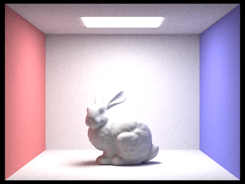 |
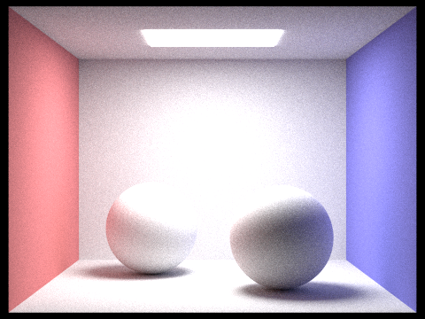 |
Direct vs. Indirect Illumination (1024 spp)
|
|
|
|
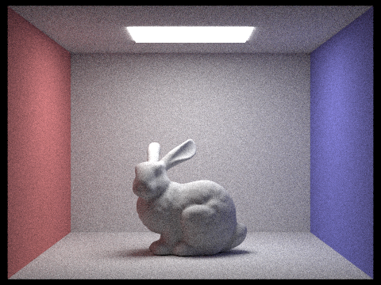 |
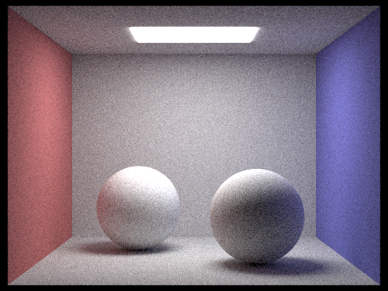 |
In both scenes, the direct-only renders capture the primary illumination from the area light and define the strongest shadows, while the indirect-only renders show softer light transport caused by multiple bounces inside the Cornell box. The indirect component is dimmer overall, but it still fills in shadowed regions and shows subtle color bleeding from the red and blue walls onto the bunny and spheres.
CBbunny Bounce Comparison (1024 spp)
Below we compare unaccumulated and accumulated bounces for CBbunny.dae as max_ray_depth increases from
0 through 5. The unaccumulated row isolates the exact mth bounce contribution, while the accumulated row shows the
sum of all bounce contributions up to depth m.
| isAccumBounces | m=0 | m=1 | m=2 | m=3 | m=4 | m=5 |
|---|---|---|---|---|---|---|
| \(L_e\) | \(K(L_e)\) | \((K \circ K)(L_e)\) | \((K \circ K \circ K)(L_e)\) | \((K \circ K \circ K \circ K)(L_e)\) | \((K \circ K \circ K \circ K \circ K)(L_e)\) | |
| false | 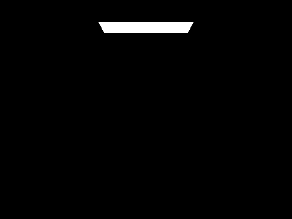 |
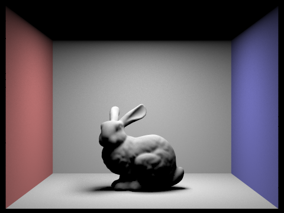 |
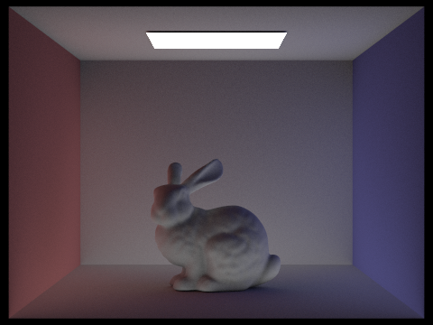 |
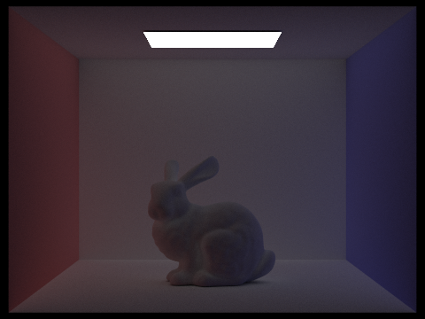 |
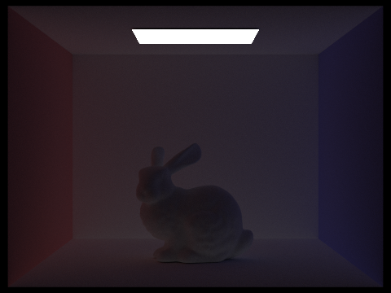 |
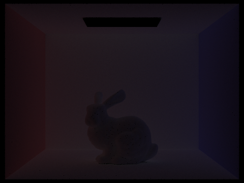 |
| \(\sum_{i=0}^{0} K^i(L_e)\) | \(\sum_{i=0}^{1} K^i(L_e)\) | \(\sum_{i=0}^{2} K^i(L_e)\) | \(\sum_{i=0}^{3} K^i(L_e)\) | \(\sum_{i=0}^{4} K^i(L_e)\) | \(\sum_{i=0}^{5} K^i(L_e)\) | |
| true | 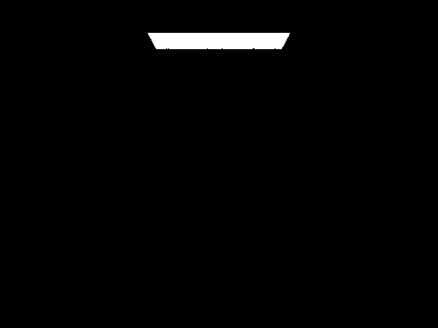 |
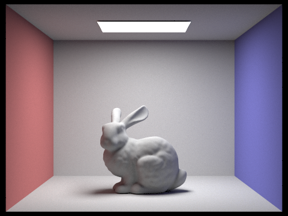 |
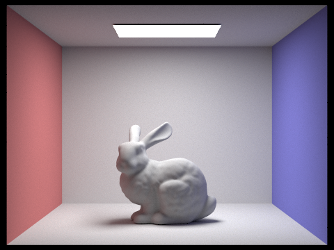 |
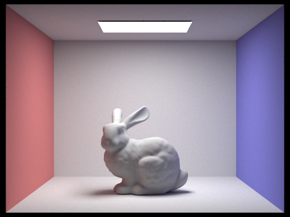 |
For the unaccumulated row at m=0, we only see emitted radiance from
the light source, so the rest of the Cornell box is black. At m=1, we get the usual direct-lighting image with the
bunny and its shadow visible. At m=2, the image shows the second bounce only: this is where indirect illumination
becomes clearly visible, with light reflected off the white walls and floor softly illuminating the bunny and reducing the harsh
contrast in regions that were previously shadowed. At m=3 and beyond, each higher-order bounce contributes less
energy, so these images become dimmer and more subtle than the second bounce.
Compared to rasterization, these higher bounces are what make the rendered result look more realistic. Rasterization with direct
lighting alone captures primary illumination and sharp shadows, but it misses the soft secondary light transport that brightens
concavities and corners. In the accumulated row, the biggest visual jump happens between m=1 and m=2,
because that is when indirect lighting first appears. The later accumulated images from m=3 onward change less
dramatically, which is expected because each additional bounce contributes less energy than the previous one.
Russian Roulette on CBbunny (1024 spp)
For this section, we re-enabled Russian roulette in at_least_one_bounce_radiance(...) so that after the first
indirect bounce, longer paths are continued probabilistically instead of deterministically. This gives an unbiased estimate of
global illumination while avoiding the cost of tracing every path all the way to a very large fixed depth.
| m=0 | m=1 | m=2 | m=3 | m=4 | m=100 |
|---|---|---|---|---|---|
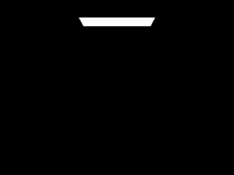 |
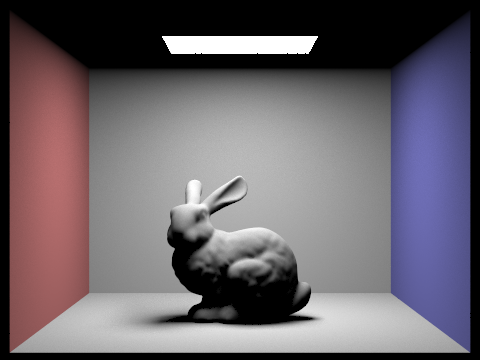 |
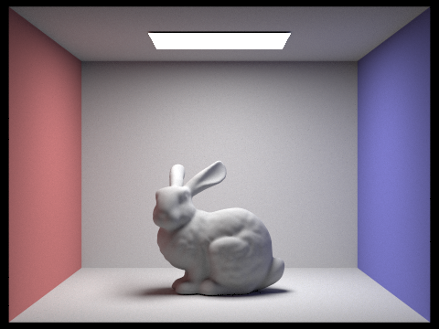 |
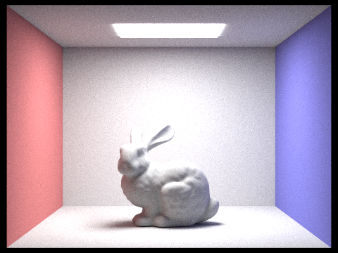 |
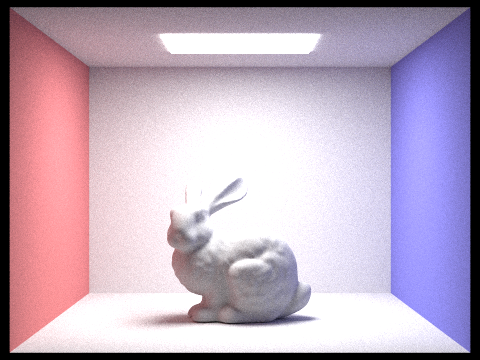 |
Because Russian roulette only affects the treatment of longer paths, the low-depth images remain close to the fixed-depth
results, while the m=100 render looks very similar to the converged accumulated-bounce image. The largest visual
change still occurs when indirect lighting first appears, and beyond that the result stabilizes quickly as the maximum depth
increases. This shows that Russian roulette lets us account for long light paths without having to trace every path
deterministically to a very large depth.
Sample-Per-Pixel Comparison on CBbunny (4 light rays)
To study convergence with respect to camera sampling, we rendered CBbunny.dae using 4 light rays and varied the
samples per pixel across 1, 2, 4, 8, 16, 64, 1024. As the sample count increases, the Monte Carlo noise should
decrease, especially in the soft shadow under the bunny, on the back wall, and across the smoother floor regions.
| 1 spp | 2 spp | 4 spp | 8 spp |
|---|---|---|---|
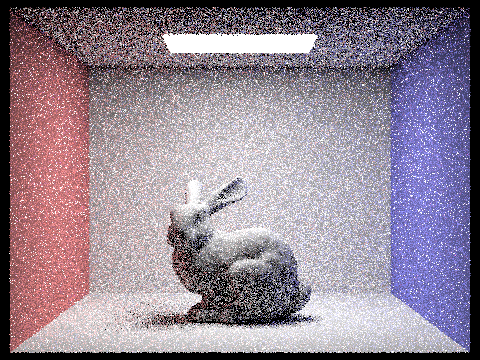 |
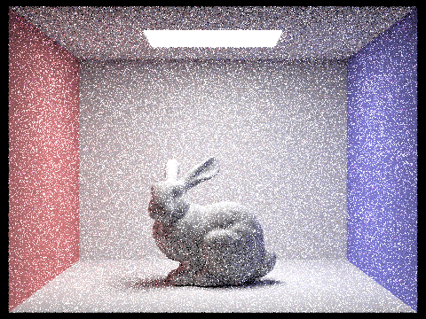 |
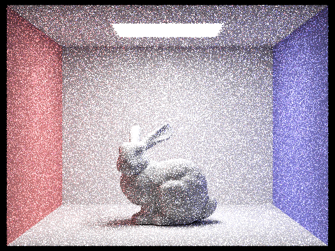 |
|
| 16 spp | 64 spp | 1024 spp | |
At very low sample counts, the image is visibly grainy because each pixel is estimated from only a few Monte Carlo samples.
As the sample rate increases, the estimate becomes more stable and the variance drops. By 64 samples per pixel,
the overall structure of the image is already fairly clean, while 1024 samples per pixel produces a much smoother
result with noticeably reduced noise in shadowed and indirectly lit regions.
Part 5: Adaptive Sampling
Adaptive sampling reduces wasted work by stopping early on pixels that have already converged and spending more samples on pixels that still have high variance. Instead of forcing every pixel to use the same number of camera rays, we monitor the estimated illuminance for each pixel and terminate sampling once its confidence interval is small enough relative to the mean.
We implemented this in PathTracer::raytrace_pixel(). As samples are traced for a pixel, we accumulate the total
radiance as usual, but we also keep running statistics over the scalar illuminance values using
\(s_1 = \sum x_k\) and \(s_2 = \sum x_k^2\). Every samplesPerBatch samples, we compute the sample
mean \(\mu = s_1 / n\), the sample variance
\(\sigma^2 = \frac{1}{n-1}\left(s_2 - \frac{s_1^2}{n}\right)\), and the 95% confidence interval half-width
\(I = 1.96 \cdot \sigma / \sqrt{n}\). If \(I \le \text{maxTolerance} \cdot \mu\), we stop tracing additional rays
for that pixel. Otherwise, we continue until either the pixel converges or we reach ns_aa, which acts as the
maximum sample budget. We also store the actual number of samples used in sampleCountBuffer so the sampling-rate
visualization reflects the true work spent on each pixel.
For the results below, we rendered two scenes with adaptive sampling enabled, using at least 2048 maximum samples per pixel, 1 light sample, and a max ray depth of at least 5. The rendered images remain visually clean, while the sample-rate heatmaps show that the path tracer spends more samples near geometric edges, contact shadows, and regions with stronger indirect-lighting variance. Large smooth wall and floor regions converge earlier and therefore use fewer samples.
| CBbunny Result | CBbunny Sample Rate |
|---|---|
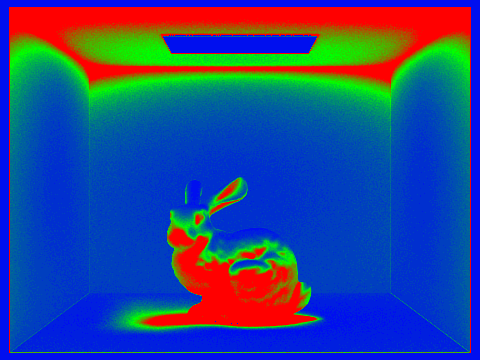 |
|
| CBspheres Lambertian Result | CBspheres Lambertian Sample Rate |
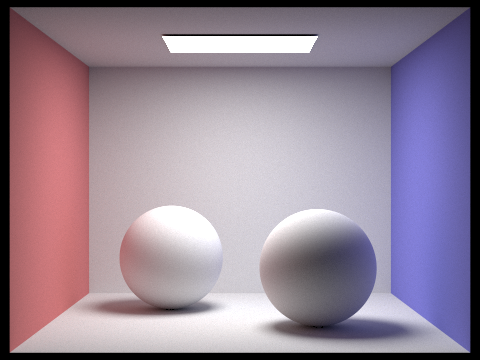 |
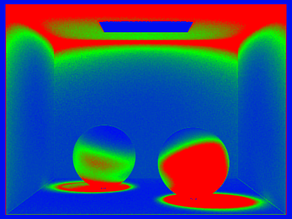 |
In the sample-rate images, warmer regions correspond to pixels that required more samples before satisfying the convergence test,
while cooler regions converged quickly. In CBbunny, the bunny silhouette, shadow boundaries, and nearby indirect
lighting transitions require noticeably more work than the flatter background walls. In
CBspheres_lambertian, the sphere contours, occlusion regions near the floor, and soft shadow gradients also demand
higher sample counts.